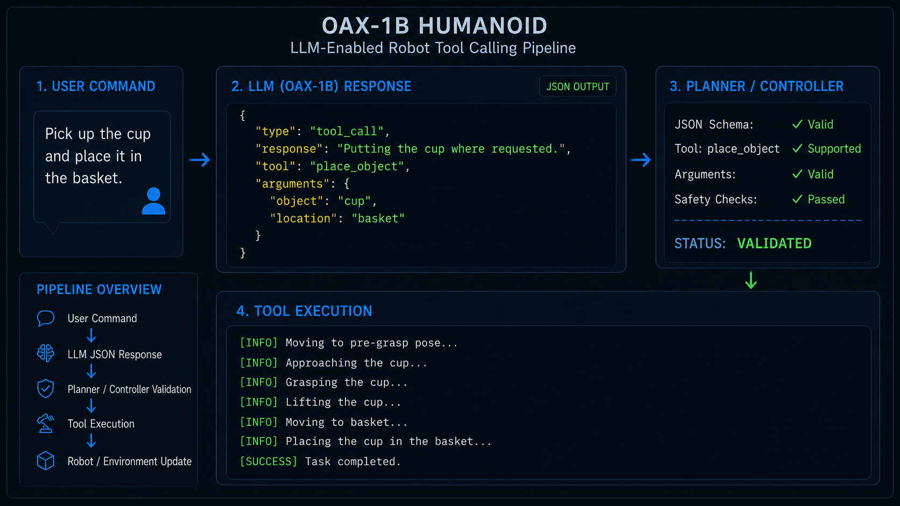
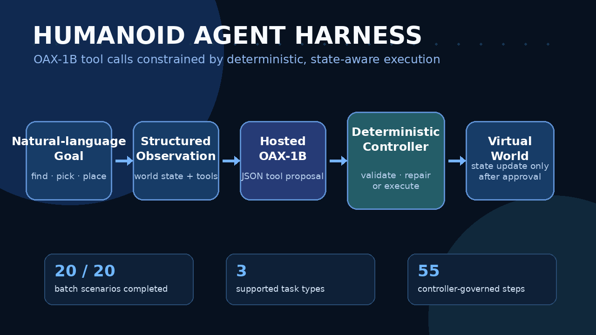
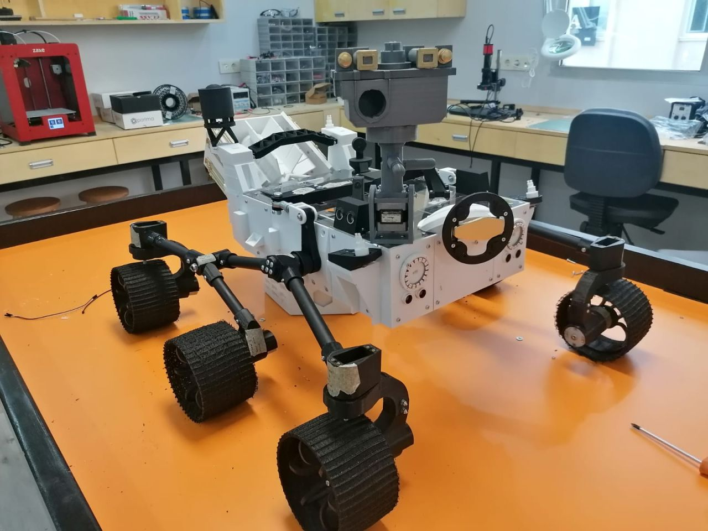
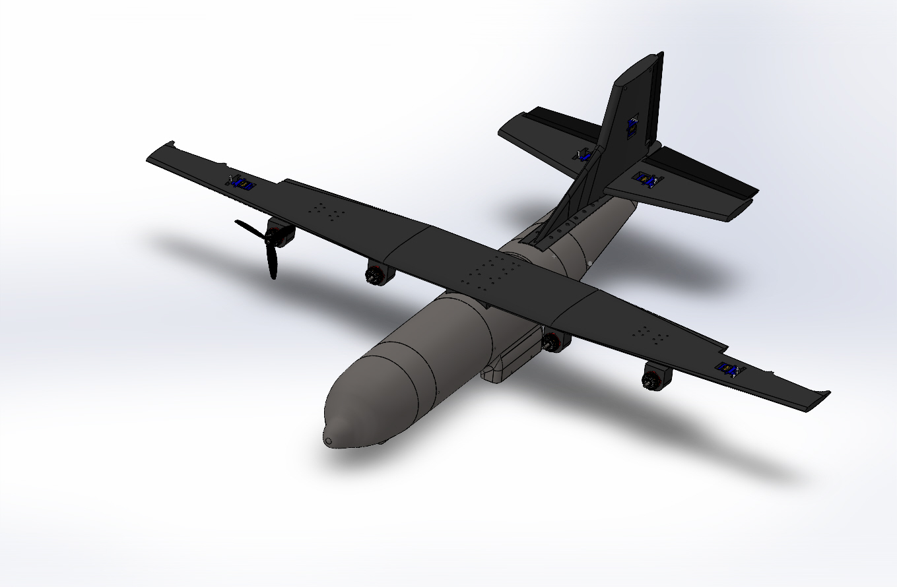
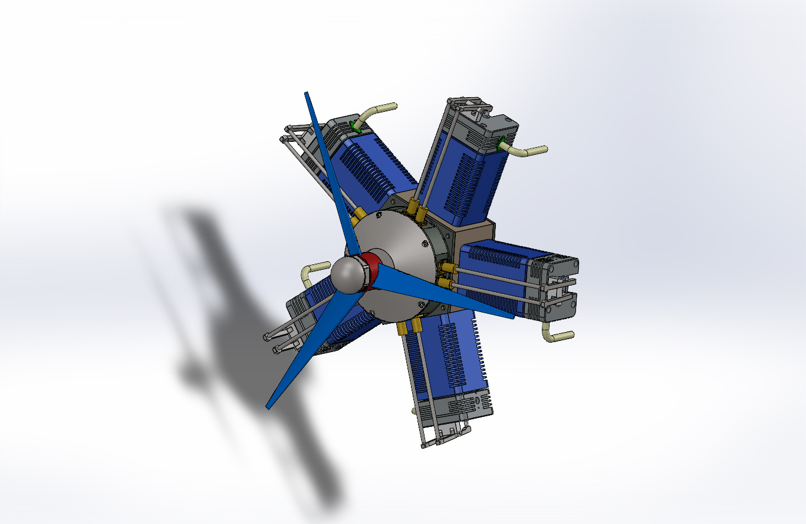
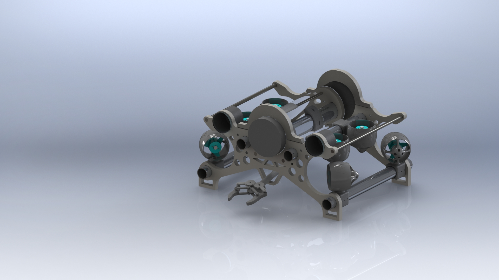

Projects
Robotics, embodied AI, robot learning, large language models, mechanical design, and end-to-end intelligent systems.
2026
5-DOF Arm Manipulation with MuJoCo
Developed a MuJoCo-based manipulation pipeline for ready-to-pregrasp and pregrasp-to-final grasp tasks using multi-height datasets, Behaviour Cloning, and Reinforcement Learning.
Work in progress — BC training, multi-height data collection and RL fine-tuning are still under development.

2026
Custom 1B LLM for Robot Tool Calling
Pre-trained a custom 1B-parameter LLaMA-style model from scratch and fine-tuned it to generate structured JSON robot tool calls for natural-language command execution.

RAG Assistantrag-assistant.mp4
2025
AI-Powered Conversational Assistant
Built a Streamlit-based assistant around a 7B-parameter language model, combining retrieval-augmented generation, OCR, PDF parsing, and web-search integration for document-grounded conversations.
Brain MRI AIbrain-mri.mp4
Inspection Lineinspection-line.mp4

Roverperseverance-rover.jpg
2022
Perseverance Rover Prototype
Recreated a reduced-scale Perseverance-inspired rover prototype based on publicly available project references, focusing on CAD adaptation, 3D-printable components, mechanical assembly, and prototype integration.
Technical files and source data are not publicly available.

Bionic Handbionic-hand.jpg

C-130 UAVc130-uav.jpg
2020
C-130 UAV Concept Design
Created a C-130-inspired unmanned aircraft concept in SolidWorks, evaluated its aerodynamic form through flow simulation, and produced a reduced-scale physical prototype using 3D printing.

Radial Engineradial-engine.jpeg
2020
Radial Engine Mechanical Assembly
Created a detailed radial-engine CAD assembly to study multi-component mechanical architecture, circular cylinder arrangement, part relationships, and assembly-level design practice.

ROVAdd rov.png
2019
Remotely Operated Underwater Vehicle
Designed and built an underwater remotely operated vehicle with a custom mechanical structure, camera system, embedded control, and robotic manipulator. The project achieved second place at the national Teknofest competition.
5-Axis Armfive-axis-arm.mp4
2018
5-Axis Robotic Arm & Conveyor System
Designed and manufactured a five-axis robotic arm and conveyor prototype using SolidWorks and 3D-printed components. The available archive is limited to a physical demonstration video of the assembled system.
Watch DemoProject documentation and source files are not publicly available.